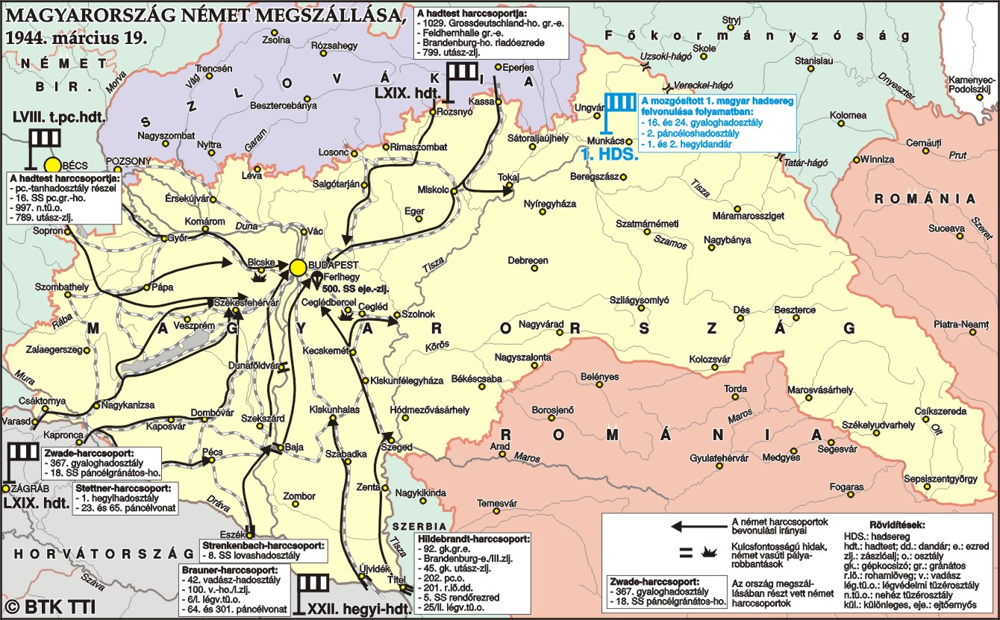
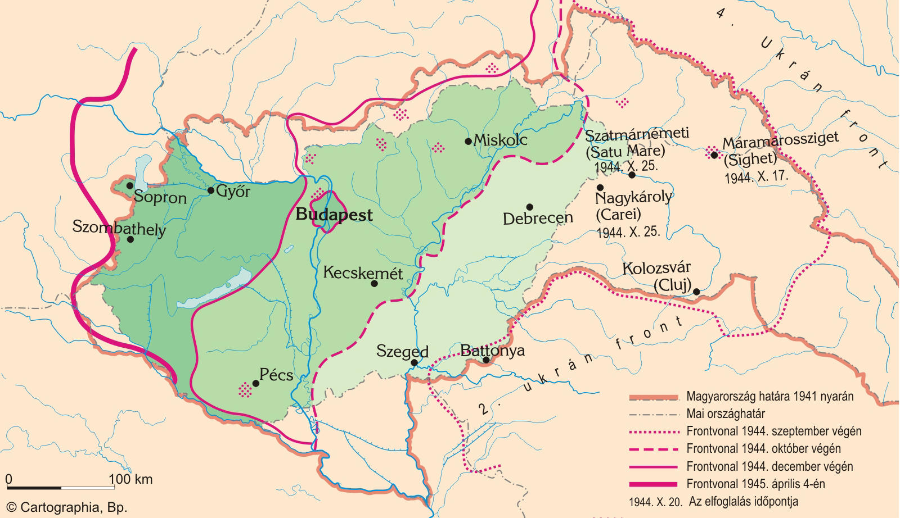
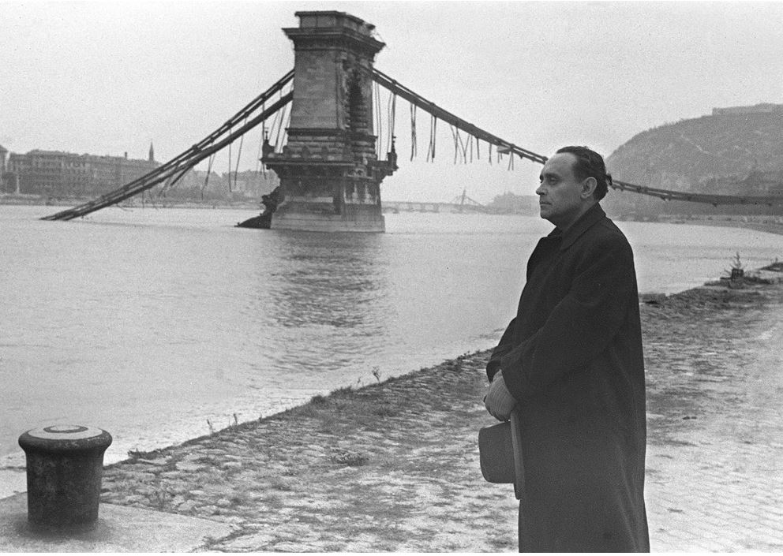
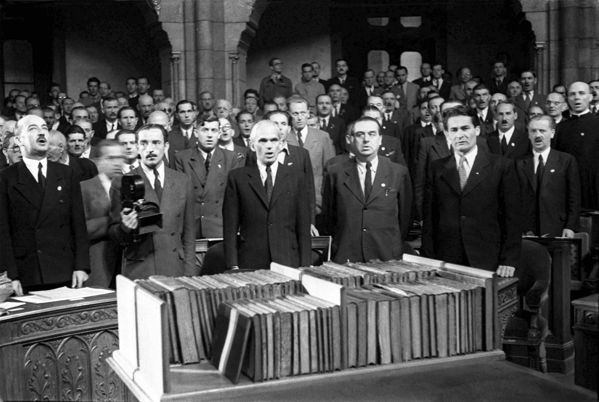

Pokol megérkezése
Német megszállás, román átállás
Kállay Miklós, Bárdossy Lászlót követve, 1943 őszén kezdte meg a németekkel való viszony alakulásának új irányvonalát, amely hamarosan a német vezetés tudomására jutott. Ekkor már dolgoztak Magyarország megszállásának tervén, amelyet a Margaréta-terv keretében 1944. március 19-én valósítottak meg. Ebben az időszakban Hitler Horthyt Ausztriába hívta tárgyalásra, hogy megakadályozza, hogy a kormányzó bármit is tegyen a megszállás ellen. Horthy csak később értesült az akcióról, és úgy döntött, hogy felesleges ellenállni a németeknek. Kállay Miklós lemondása után Sztójay Dömét nevezte ki miniszterelnöknek 1944. március 22-én. A német megszállás után, 1944 áprilisában megkezdődött Magyarország intenzív bombázása a szövetséges légierő által. Sztójay teljes mértékben a németek érdekeit szolgálta, miközben az ország irányítását a németek által kinevezett Edmund Veesenmayer vette át. Politikai tisztogatások indultak, és a Gestapo mellett a német hadsereg is aktívan részt vett ebben. Magyar politikusokat és országgyűlési képviselőket tartóztattak le, sokukat koncentrációs táborokba hurcolták. A kormány feloszlatta a pártokat és szakszervezeteket, és a tisztogatások mélyen behatoltak az ország politikai életébe. Sztójay, hogy bizonyítsa elkötelezettségét, a keleti frontra küldte az I. magyar hadsereget. 1944 augusztusában, amikor a román hadsereg átállt a szövetségesek oldalára, a németek helyzete romlott a délkeleti fronton, segítve az orosz előrenyomulást. Ekkor Horthy elkezdte előkészíteni Magyarország kiugrását a háborúból. Augusztus 29-én Sztójayt leváltotta, és Lakatos Gézát nevezte ki miniszterelnöknek, aki 1944. október 16-ig maradt posztján. Horthy azonban nem vonva be az ellenzéki Magyar Frontot a katonai előkészületekbe, így a kiugrás nem tudott széleskörű politikai támogatást szerezni.

A keleti front eléri Magyarországot
1944-től, amikor a keleti front közeledni kezdett a Kárpát-medencéhez, a magyar háborús erőfeszítések intenzívebbé váltak, és német kérésre mozgósították az 1. magyar hadsereget. Ezt elsősorban az Északkeleti Kárpátok védelmére szánták, azonban a németek a fronton keletkezett 200 km-es rés betömése érdekében Galíciába vezényelték őket. Miután az áprilisi offenzíva részleges sikert hozott, július 22-én szovjet támadás érte a magyar csapatokat, és a visszavonulás mellett döntöttek. Horthy Miklós parancsának értelmében a hadsereg csak Magyarország felé vonulhatott, megakadályozva, hogy a németek a lengyel fronton használják őket. Az 1. lovashadosztályt és az 5. hadosztályt a németek a varsói felkelés leverésére kívánták felhasználni, de ezek az alakulatok is visszatérhettek Magyarországra.
1944 augusztusában az 1. magyar hadsereg létszáma 200 000 főre nőtt, és védelmi vonalakra rendezkedtek be, amelyek egészen a Hunyadi-vonalig terjedtek, ami a legkülső, határokon kívüli védelmi akadályrendszer volt. A szovjetek, akik a 4. Ukrán Frontot a Kárpátok áttörésére irányították, nem tudták meghódítani a magyar védelmet, mivel az 1. hadsereg október 17-ig tartotta a Kárpátokat. Azonban Románia átállása után a szovjetek megkerülték a magyar állásokat. Az 1. magyar hadsereg egyes maradványai Csehszlovákián keresztül a Dunántúlon gyűltek össze. Augusztus 30-án mozgósították a 3. hadsereget is, tekintettel Románia átállására és a 2. Ukrán Front betörésére a Dél-Kárpátokon keresztül. A hadsereg szeptemberben harcolt Arad és Nagyvárad térségében, ahol hullámzó összecsapások zajlottak a szovjetekkel. Szeptember 29-én a magyar-német csapatok visszafoglalták a nagyváradi repülőteret, amit október 4-ig sikerült megtartaniuk. Azonban a szovjet-román erők Debrecen és Nyíregyháza felé törtek, és bár a magyar védelem több sikeres ellenlökést hajtott végre, a haderő gyakorlatilag német parancsnokság alá került. A 2. és 3. hadsereg hadrendje felborult, és egységeiket a német haditervek szerint vetették be. A Debrecen–Nyíregyháza vonalon elindult hortobágyi páncéloscsata döntő ütközetévé vált.

Délvidéki vérengzés
A második világháború végéhez közeledve, 1944 őszén a jugoszláv partizánok, a szovjet Vörös Hadsereg támogatásával, visszafoglalták a Délvidéket a német és magyar erőktől. Az újonnan megalakuló kommunista Jugoszlávia vezetése – különösen Josip Broz Tito irányításával – bosszút kívánt állni a magyar közigazgatás alatt történt korábbi sérelmekért, különösen az 1942-es razzia miatt. A megtorlások során a jugoszláv partizánalakulatok – sok esetben válogatás nélkül – üldöztek, bebörtönöztek, megkínoztak és kivégeztek tízezrével magyarokat, németeket (svábokat) és más, „megbízhatatlannak” nyilvánított nemzetiségeket. Az áldozatok többsége ártatlan civil volt, köztük nők, gyermekek és idősek. A legújabb történeti kutatások szerint a magyar áldozatok száma 20 000 és 40 000 fő közé tehető, de egyes becslések akár 50 000 főről is beszélnek. A kivégzések során nem folytattak hivatalos eljárásokat: tömegesen hajtottak végre lőporos gödörbe lökéseket, agyonveréseket, akasztásokat, sokakat elhurcoltak munkatáborokba, ahonnan nem tértek vissza.
Kiugrási kísérlet
1944. október 11-én egy magyar küldöttség Moszkvában aláírta a fegyverszünetet, amely értelmében Magyarország visszavonul a trianoni határok mögé és hadat üzen Németországnak. Ekkor zajlott a tankcsata Debrecen környékén. Ennek hatására Horthy október 15-én rádióbeszédében bejelentette Magyarország kiugrását a háborúból. Azonban a Gestapo is lépett: még október 15-én reggel elrabolták ifjabb Horthy Miklóst, és megzsarolták a kormányzót. Ennek következményeként Horthy október 16-án lemondott, ahogy a Lakatos-kormány is, ezzel pedig véget ért a Horthy-korszak.
Nyilas uralom
Szálasi Ferenc, követve a Führer és a Duce példáját, nemzetvezetővé választatta magát a parlamenti képviselők maradékával. Minden erejét a szovjetek elleni harcra összpontosította. A nyilas karhatalmisták könyörtelenül kivégezték a katonaszökevényeket és mindenkit, aki a háború értelmetlenségéről vagy a harc befejezéséről beszélt. Bajcsy-Zsilinszky Endrét és katonatársait is elfogták és kivégezték, mivel fegyveres ellenállást próbáltak szervezni a nyilasok és a németek ellen. A nyilas terror legfőbb áldozatai a budapesti gettókban élő zsidók és a zsidó munkaszolgálatosok voltak. Budapesten több ezer zsidó férfit, nőt és gyermeket sorakoztattak fel a Duna-parton, majd a folyóba lőttek őket. A német megszállást követően a cigányokat is üldözni kezdték: a férfiakat kényszermunka-táborokba deportálták, az asszonyokat, öregeket és gyerekeket pedig nagybirtokok pajtáiba gyűjtötték, ahol csendőrök őrizték őket. A nyilas hatalomátvételt követően elindult a cigányok legyilkolása. A komáromi erődből több ezer magyar romát vittek koncentrációs táborokba, de sokan, főleg öregek és gyerekek, már a deportálás előtt belehaltak az éhezésbe és bántalmazásba. A roma holokausztnak több mint ötezer magyarországi roma áldozata volt.

Budapest ostroma
Az első szovjet páncélos 1944. november 3-án érte el Budapest határát, és 102 nap múlva, 1945. február 13-án adta meg magát a város. A védők mintegy ötven napig tartották magukat a szovjet ostrommal szemben, bár készleteik legnagyobb részét már az első összecsapások napjaiban elvesztették, mivel a külvárosi raktárak gyorsan az ostromlók kezére kerültek. A civil lakosságot nem telepítették ki, ezért sokan közülük áldozatul estek a véres harcoknak, amelyeket a kortársak a sztálingrádi csatához hasonlítottak. A harcok kezdete többféle dátum szerint is meghatározható: október 29-én indította a 2. Ukrán Front első támadását Budapest ellen (a szovjet történetírás ezt tekinti a kezdőpontnak), míg december 25-én zárult be a szovjet ostromgyűrű, és december 29-én adták át a szovjet parlamenterek a német városparancsnokságnak a megadásra felszólító ultimátumot. Ezt követően indultak meg a valódi harcok, először a pesti oldal ellenállását számolták fel, majd a budai oldal, köztük a budai vár bevételére összpontosítottak. A németek a Dunán való átkelést próbálták megakadályozni, ezért felrobbantották a két városrészt összekötő hidakat. A németek többször is próbáltak felmentő akciókat indítani, hogy segítsenek a védőknek, ám egyikük sem járt sikerrel, annak ellenére, hogy a keleti fronton szolgáló német páncéloshadosztályok fele Magyarországon tevékenykedett. Az akciók célja nem a védők kimenekítése volt, hanem újabb csapatok eljuttatása a városba.

Végül, Hitler parancsa ellenére, a védők február 11-én este kitörési kísérletet tettek. Ennek során csupán egy maroknyi katona érte el a baráti vonalakat, és a védelem parancsnokainak többsége is fogságba esett. A város 1945. február 13-án került végleg szovjet irányítás alá. Az ostrom alatt és után több tízezer civil lakost hurcoltak el a szovjetek kényszermunkára ("málenkij robot") a fővárosból és környékéről, hogy teljesítsék Malinovszkij marsall 138 000 fős hadifogolyra vonatkozó jelentését. A munkatáborokba deportált emberek többsége vagy évekkel később, vagy egyáltalán nem tért haza.
Ideiglenes Nemzetgyűlés

A német megszállás alól felszabadított területeken újraindult az élet, és 1944. december 21-én Debrecenben megalakult az Ideiglenes Nemzetgyűlés,
majd pedig az Ideiglenes Nemzeti Kormány. Az új hatalom hadat üzent Németországnak, és Magyarország átállt a szövetségesek oldalára.
1945 áprilisára a szovjet csapatok kiszorították a német erőket Magyarországról.
Magyarország embervesztesége
A második világháború Magyarország számára több emberáldozattal járt, mint az első világháború, amely 660 821 fő életét követelte. A teljes lakosság arányában Lengyelország, a Szovjetunió és Németország után Magyarország szenvedte el a legnagyobb népességveszteséget. 1941 és 1945 között a katonai veszteségek 350 ezer főre, a civil lakosság veszteségei 60–100 ezer főre, a zsidó vagy annak minősülő lakosságé pedig több mint 400 ezer főre tehetők az 1941-es országhatárok között. A katonai veszteségek pontos meghatározása csak a rendszerváltozás után vált lehetségessé. A világháborús szovjet hadijelentések és azok alapján készült hadtörténeti írások gyakran eltúlozták a német és magyar katonai veszteségeket. Például Budapestre vonatkozóan 138 000 főnyi hadifogolyról számoltak be, miközben a védőcsapatok létszáma körülbelül 79 000 fő volt, és ezek közül csaknem fele esett el.